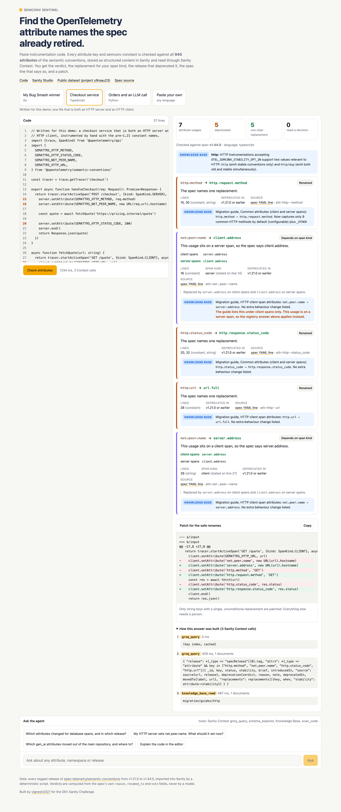
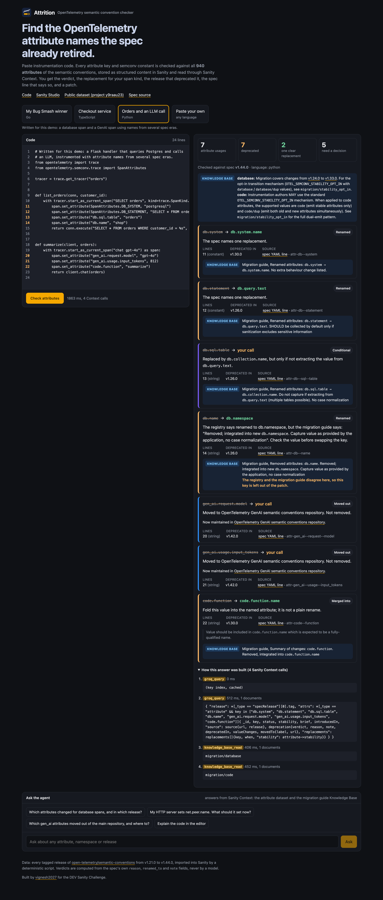

Find the OpenTelemetry attribute names the spec already retired.
Paste instrumentation code. Every attribute key and SDK constant is checked against all 940 attributes of the semantic conventions, stored as structured content in Sanity and read through Sanity Context. You get the verdict, the replacement for your span kind, the release that deprecated it, the spec line that says so, and a patch.

What a keyword search gets wrong
net.peer.name
Two answers. server.address on client spans, client.address on server spans. The agent reads the span kind from your code, and asks when it cannot.
db.sql.table
Becomes db.collection.name only if the value is not extracted from db.query.text. A condition, not a rename.
db.name db.namespace
The registry says renamed. The migration guide says removed and integrated. Both are shown, and the key stays out of the patch.
gen_ai.*
58 GenAI attributes, including mcp.* and openai.*, moved to a separate repository in v1.42.0. Moved is not removed, and the agent links to where they live now.
Built on Sanity Context
documents in the public dataset y9raau23/production, imported from 26 spec releases by a deterministic script
deprecated attributes, each with a verdict computed from the spec's own reason, renamed_to and note
sources in the Knowledge Base: a dataset slice, five official migration guides and two older spec pages
Context tools used: groq_query for verdicts, knowledge_base_read for migration guidance, schema_explorer in chat
Real repositories, pinned commits
| Repository | Deprecated usages in code | Files to touch |
|---|---|---|
| open-telemetry/opentelemetry-demo | 6 | 4 |
| jaegertracing/jaeger | 67 | 13 |
| redis/go-redis | 9 | 4 |
| go-gorm/opentelemetry | 0 | 0 |
| uptrace/opentelemetry-go-extra | 18 | 7 |
A finding means the key is deprecated in the spec. Fixtures that read old data, or libraries that dual-emit on purpose during a migration, may keep the old key for now. Every line is linked in the results file.
